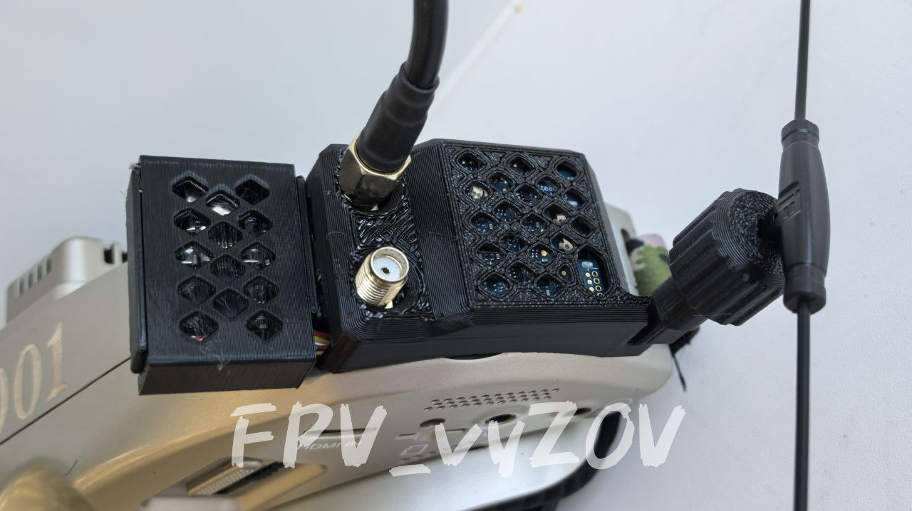

Тестер для видеоприемников от Команды
ℹ️ Тестер для видеоприемников - устройство для подключения видеоприемников из очков к внешним экранам c аналоговым входом* (монитор, FPV-монитор, телевизор).
*Если устройство имеет только цифровой вход, то понадобится конвертер AV-HDMI.
Можно использовать при настройке и тестирования функции переключения каналов со стороннего источника (пульт).
Чтобы каждый раз не вставлять и вынимать приемник из очков, или когда нужно вывести изображение на большой экран (телевизор) не подключая очки целиком.
Пример использования:
, на фото видеоприемник упакован в данный тестер.
Для сборки понадобится:
- 1 шт.;
2. Разъем штыревой PBS-1x10L (2,54) - 1 шт.;
3. Разъем XT60E-M - 1 шт.;
AV-провод "тюльпан" мама или папа - 1 шт.
4. Кнопка двухпозиционная - 1 шт.;
5. Понижающий преобразователь напряжения - 1 шт.;
6. Винт М3х8 - 4 шт.
📎
#3Д_для_периферийных_устройств
#Ремонт_Мастерская
#техник_бпла
Это вложение из поста t.me/platforma_fpv/250/1582

Корпус для G13 Junior к очкам SKYZONE.
По сборке G1.3 Junior.
✔️ 1. К видеоприемнику (у нас это SKYZONE Steadyview V3.3) подключена плата (у нас ESP32-S3 SuperMini).
Важно отметить, плата к видеоприенику не припаяна, а подключена через гребенку.
То есть, всегда можно видеоприеник отсоединить и использовать как раньше, что удобно.
✔️ 2. На плате ESP32-S3 SuperMini установлена прошивка G13 Junior.
✔️ 3. К плате ESP32-S3 SuperMini подключен приемник ELRS.
✔️ 4. Приемник ELRS сопряжен с пультом.
✔️ 5. Все упаковано в
3Д-печатный корпус (на фото).
Во избежание перегрева, плата ESP32-S3 SuperMini вынесена отдельно, на корпусе перфорация для вентиляции. Также к корпусу крепится держатель для антенны ELRS.
⚠️ Если используется вынос или ретранслятор данное решение не подходит. В этом случае необходимо будет использовать корпус ретранслятора или выноса для размещения дополнительных плат и крепления антенны.
Принцип работы G-13 Junior:
1. На пульте переключается тумблер (настроенный в G13 Junior).
2. Приемник ELRS принимает сигнал с пульта и передает на плату ESP32-S3 SuperMini.
3. Плата ESP32-S3 SuperMini принимает сигнал о положении тумблера, и в зависимости от настроенный "правил VRX" передает видеоприемнику переключится на настроенную частоту.
📝
при поддержке
#3Д_для_периферийных_устройств
#G13
#техник_бпла
Это вложение из поста t.me/platforma_fpv/250/1677
#ПРОШИВКА
ПРОШИВКА ДЛЯ FPV ДРОНА
Приемник-передатчик (RX-TX)
Не умею отображать вложенные ссылки на топики
модифицированная прошивка для передатчика и приемника ELRS (управление)
📝
Полетный контроллер
- российская прошивка для пк - защита от дизарма
📝
Не умею отображать вложенные ссылки на топики
украинская прошивка для пк
Переключение видеоканалов
- переключение видеоканалов в полете с пульта
📝
Не умею отображать вложенные ссылки на топики
- переключение видеоканалов в полете с пульта
📖
: файлы для загрузки, инструкция
Регулятор оборотов
- прошивка для 32-битного регуляторов оборотов моторов (ESC)
Аппаратура управления
Инструкции по прошивке, для техника FPV
ПРОШИВКА ДЛЯ DJI
1001 прошивка на текущий момент через терминал недоступна
- альтернатива тут -
Это вложение из поста t.me/platforma_fpv/2/202

Прошивка Юниор (Junior) от G-13
ℹ️ Прошивка для простого управления видео_каналами с пульта. Позволяет переключать заранее настроенные видеоканалы в полете, до 10 каналов в рамках сетки VRX.
О прошивке ЮНИОР
Совместимое оборудование
:
Видеоприемники (на выбор):
- SKYZONE Steadyview V3.3,
- SKYZONE SteadyView X 5Ghz,
- SKYZONE SteadyView X 5.8 Ghz,
- Foxeer Wildfire,
- 5.8 VRX «Аналогов нет»,
- 1,2 VRX «Аналогов нет»,
- FT1200,
- FT3500.
Приемник управления (на выбор):
- любой ELRS,
- любой TBS.
Инструкции
по прошивке
📎
🎞 На фото видеоприемник упакован в
(лайфхак для технического специалиста)
📦
Кейсы для готовых решений G13
#ПРОШИВКА
#FPV
#техник_fpv
#видео
#Прошивка_для_переключения_видеоканалов
Веб-страница создана автоматически на основе поста пользователя ПЛАТФОРМА_FPV